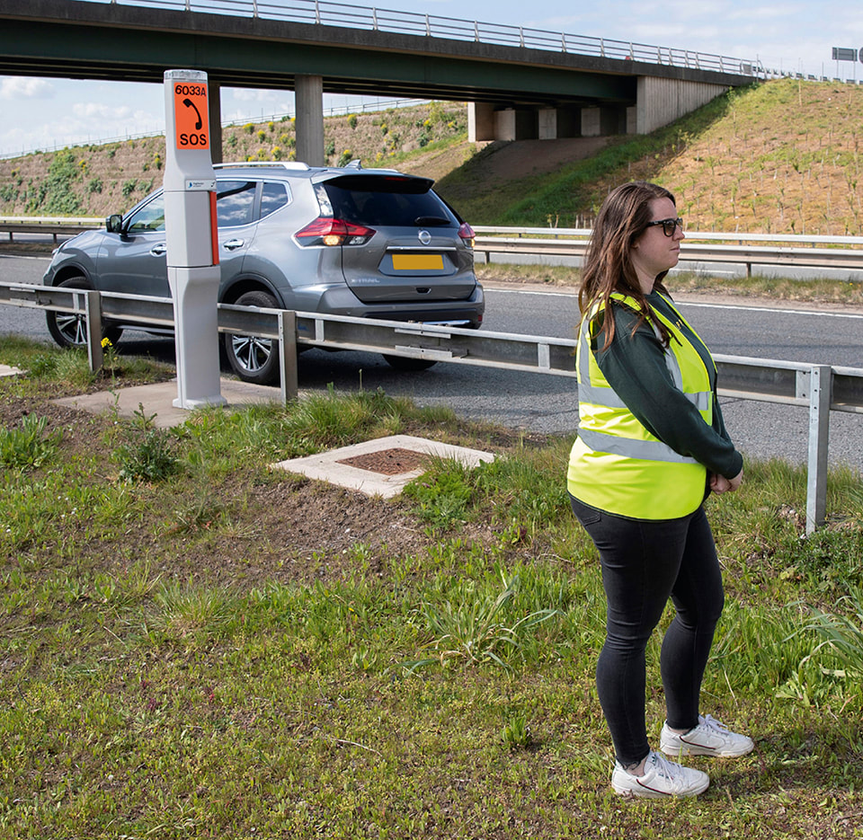
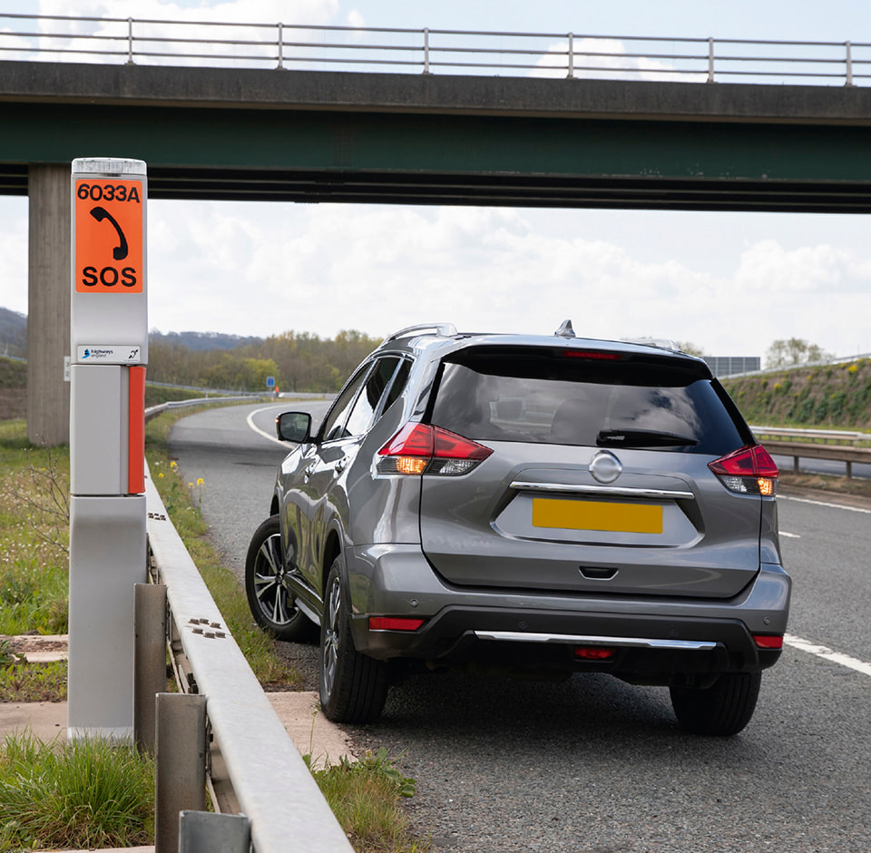
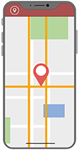
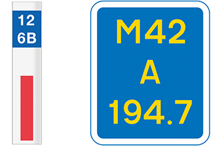
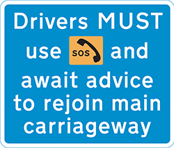

Breakdowns and incidents (275 to 287)
Breakdowns (276)
276
If your vehicle breaks down, think first of all other road users and
If your vehicle breaks down, think first of all other road users and
- get your vehicle off the road if possible
- warn other traffic by using your hazard warning lights if your vehicle is causing an obstruction
- help other road users see you by wearing light-coloured or fluorescent clothing in daylight and reflective clothing at night or in poor visibility
- put a warning triangle on the road at least 45 metres (147 feet) behind your broken-down vehicle on the same side of the road, or use other permitted warning devices if you have them. Always take great care when placing or retrieving them, but never use them on motorways
- if possible, keep your sidelights on if it is dark or visibility is poor
- do not stand (or let anybody else stand) between your vehicle and oncoming traffic
- at night or in poor visibility do not stand where you will prevent other road users seeing your lights
Additional rules for motorways (276 to 279)
277
If your vehicle develops a problem, leave the carriageway at the next exit or pull into a service area if possible (see Rule 275 for places of relative safety). If you cannot, you should
Go left
- move into the left lane
- pull into an emergency area or onto a hard shoulder if you can
- stop as far to the left as possible, leaving space to exit your vehicle and with your wheels turned to the left
- if you can, stop just beyond an emergency telephone
- switch your hazard warning lights on
- if it’s dark or visibility is poor, use sidelights.
- exit your vehicle by the side furthest from traffic, if it is safe and possible to do so, and ensure passengers do the same
If you can’t
- get your vehicle to the left lane or a place of relative safety (see Rule 275), and
- exit your vehicle safely to get well away from it and moving traffic,
- stay in your vehicle
- keep your seatbelts and hazard warning lights on
- call 999 immediately and ask for the police. Alternatively, press your SOS button if your vehicle has one and ask for the police.
- put on high-visibility clothing if you have it and it is within easy reach
- get behind a safety barrier where there is one, but be aware of any unseen hazards such as sudden drops, uneven ground or debris
- DO NOT stand in a place where your vehicle could be forced into you if moving traffic collides with it
- DO NOT return to your vehicle even if it’s raining, cold or dark
- remain alert and aware of vehicles or debris coming towards you
- keep passengers away from the carriageway and children under control
- DO NOT attempt repairs on your vehicle
- DO NOT place a warning triangle on the carriageway
- animals MUST be kept in the vehicle or, in an emergency, under control on the verge.

Rule 277: Keep well away from your vehicle and moving traffic

Rule 277: Keep well away from your vehicle and moving traffic
Get help
- use the free emergency telephone to obtain advice and assistance
- contact a breakdown recovery service
- always face the traffic when you speak to remain aware of vehicles or debris coming towards you
- inform them if you are a vulnerable motorist such as disabled, older or travelling alone
- wait well away from your vehicle and moving traffic, behind the safety barrier where there is one
- if you are unable to exit your vehicle or if you have not stopped near a free emergency telephone, call 999 immediately and ask for the police. Alternatively, press your SOS button if your vehicle has one and ask for the police.

App. Use a mobile telephone mapping application.

Marker post or driver location sign. Quote the numbers and letters on marker posts or driver location signs which are located along the edge of the road.
278
To rejoin the carriageway after a breakdown from
To rejoin the carriageway after a breakdown from
- a hard shoulder, build up speed, indicate and watch for a safe gap in the traffic. Be aware that vehicles, obstructions or debris may be present on the hard shoulder
- an emergency area, you MUST use the emergency telephone provided and follow the operator’s advice for exiting the emergency area. A lane may need to be closed so that you can rejoin the carriageway safely.

Rule 278: Emergency area information sign
Rule 297
Disabled drivers. If you have a disability that prevents you from following the above advice in Rules 277 and 278, you should
Disabled drivers. If you have a disability that prevents you from following the above advice in Rules 277 and 278, you should
- switch on your hazard warning lights
- stay in your vehicle and keep your seat belt on
- call 999 immediately and ask for the police. Alternatively, press your SOS button if your vehicle has one and ask for the police.